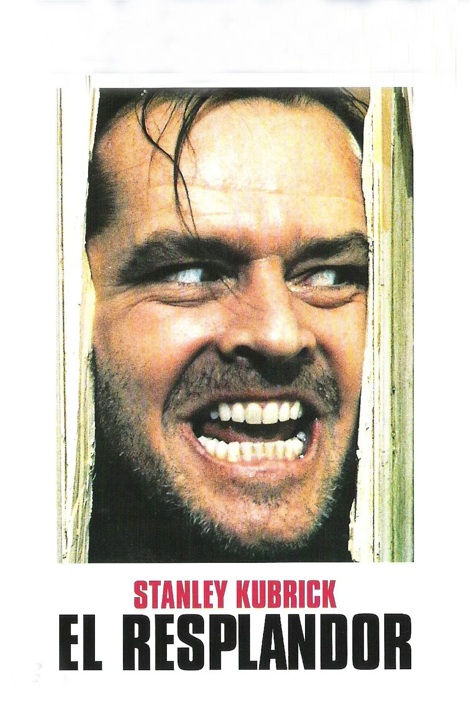
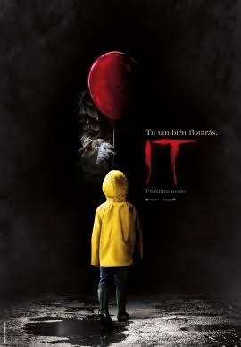
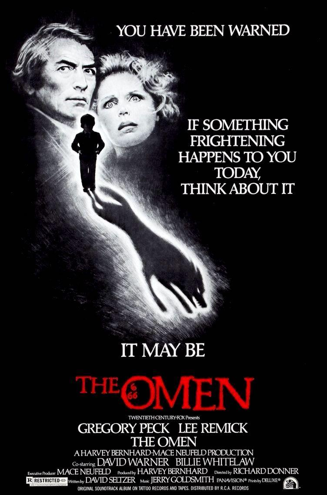

Al ser hoy hawolei, es obligatori hablar sobre terror, y que mejor que unas peliculas
El Resplandor

Jack Torrance es un hombre que se muda con su familia a un hotel aislado que debe cuidar, con la esperanza de salir del bloqueo creativo de su escritura. Mientras Jack no puede escapar del bloqueo, las visiones psíquicas de su hijo van en aumento
IT
Varios niños de una pequeña ciudad del estado de Maine se alían para combatir a una entidad diabólica que adopta la forma de un payaso y desde hace mucho tiempo emerge cada 27 años para saciarse de sangre infantil.

La profecia
El destino del mundo está en manos de Damien, un niño con rostro angelical que, en realidad, es la encarnación del Anticristo.
